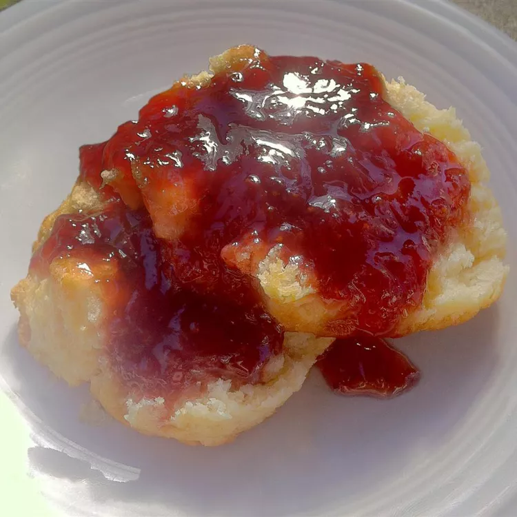

Simple Strawberry Syrup

Description
A simple syrup made of strawberries to use in drinks, desserts, and more
Ingredients
- 1 cup water
- 1 cup white sugar
- 2 cups quartered strawberries
Steps
- Combine water and sugar in a saucepan over medium-high heat; stir until sugar is dissolved.
- Mix strawberries into saucepan and bring to a boil; boil for 10 minutes.
- Reduce heat to medium-low; simmer until strawberries are mushy and sauce is thick, about 10 minutes.
- Strain liquid into a bottle and refrigerate.